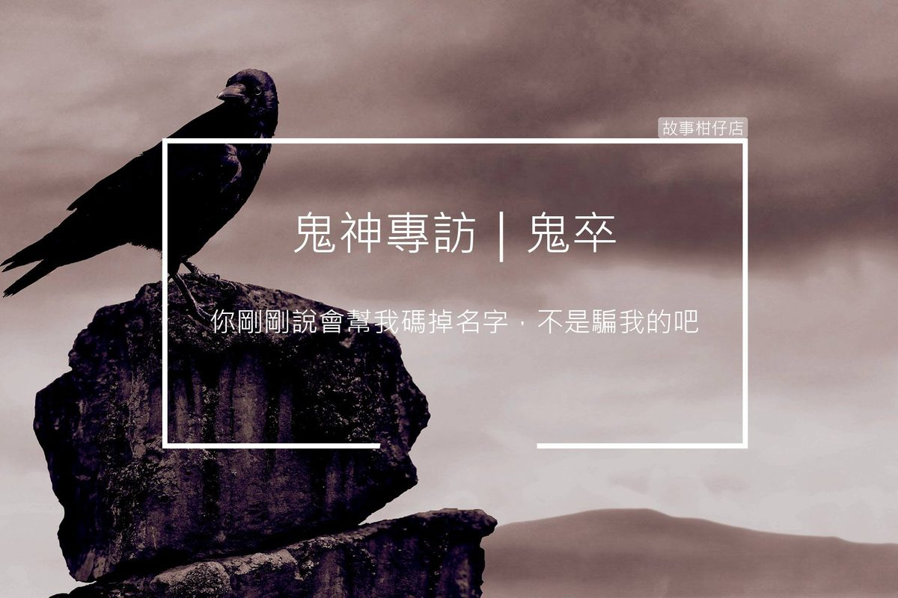

鬼神專訪──火爆鬼卒

採訪人物：某基層鬼卒
採訪人：老闆
採訪時間：民國107年，農曆七月
採訪地點：奈何橋旁涼亭
故事回顧：孟婆採訪
老闆：大哥祢好，終於訪到地府的基層員工，可以聽聽地府大多數人的心聲。
鬼卒：你剛剛說會幫我碼掉名字，不是騙我的吧？
老闆：老闆我人稱誠實可靠小郎君，請祢放心，錄音檔也不會外露，僅供我們內部寫稿使用，放膽地說。那我就提出第一個問題了，請問一下鬼卒的工作項目好嗎？
鬼卒：我們阿，分成幾組，行政組、拷打組、機動組，另外還有一群考績比較高、能力比較強的就會被歸入各個主要長官底下，去當武裝護衛或部隊。精英中的精英，就會歸到鍾馗大哥那管轄，鍾馗大哥對待手下甚好，動不動就好酒好肉打成一片，時不時還會帶去陽間出差，最近看他們在基隆廟口打卡，羨慕死我了，好想轉過去。
可惜我上班才剛滿百年，資歷不夠，只得每天在這老巫婆底下受罵，抓抓一些不喝湯想逃跑、或喝了湯發神經的亡魂。
老闆：聽說孟婆除了上班時間固定在橋前之外，私人時段神出鬼沒，你說這話可得當心。
鬼卒：這時間她跑去三途河的彼岸花湯屋洗澡了啦，不用擔心，不過她再怎麼洗，皮膚也不會緊啊，浪費錢而已。
老闆：大哥祢還真放膽啊，老闆我欣賞祢，不過祢剛剛提及的那幾組，可以詳細說說業務上的不同嗎？
鬼卒：行政組都是些腳程快，口才好的傢伙，年年地府的職員運動會，他們馬拉松都拿第一，主要負責十殿互相送公文，還有接待官員跟應付媒體。拷打組就是在各大小地獄負責對亡魂執行懲罰的那夥人，各個身強體壯，面貌驚人。前幾日，大叫喚地獄有千名亡魂暴動，拷打組的只出動了十人就鎮壓了，跟本一個打百個。
機動組就是打雜大隊，一旦各組有人手請假就會從裡面找人補，另外打掃三途河畔、十殿、還有大小地獄的環境管理等等，都是他們處理，身形比較矮小，但是手腳快，也是各組裡面人最多的。
最後一些能力強、頭腦好資歷也夠的精英老鳥們，就會被分配到十殿閻王底下做精銳部隊，次一點的就發給二三級主管當護衛隊，其中最精英的幾位，會發到鍾馗大哥那做特勤隊，有點像你們人間的特種部隊那樣。
老闆：那大哥祢應該就是孟婆底下的護衛部隊吧，看起來對孟婆有很多意見啊。
鬼卒：意見？根本就是不爽，為什麼我一表人才要在這個鬼婆底下做事，動不動就罵，遲到一分鐘就扣半天薪，也沒想過我家住在一殿附近，通勤過來有多遠，不能體諒一下嗎？要不是資歷不夠，我哪一點比不上特勤隊的人，而且考績都掌握在主管手中，我這人就是說話直，早就黑到不行了。
不要錄了啦，我說的都是廢話，反正也沒人會理我，你們不也訪過一些小主管，肯定都一派和諧吧，你想想我第一年就被分配過來這裡，一百年了，明年終於晉升老鳥階級，可以調單位，可我考績總被打乙等，誰要收？這種主管一手遮天的制度要改啦。
（孟婆從鬼卒後方姍姍走來。）
老闆：這個……，今天就訪到這好了，謝謝大哥的合作，有機會我再來。
鬼卒：等等，我還沒說完，就像上次奈何橋一夥亡魂集體不喝想衝過橋，你知道那個鬼婆叫我們幹嘛嗎？
（孟婆漸漸逼近涼亭。）
老闆：大哥、大哥，我們採訪時間真的到了，謝謝祢的配合，真的可以不用說了。
（老闆擠眉弄眼。）
鬼卒：你這是怎麼了，你們採訪不是最愛這種爆料的人，說那鬼婆兩句會怎樣，現在整張臉扭成一團是怎樣，看不起我？
（孟婆站在鬼卒正後方。）
老闆眼神死：大哥，今天謝謝祢，我家裡還有熬湯，先回去看看火了，祢好自為之。